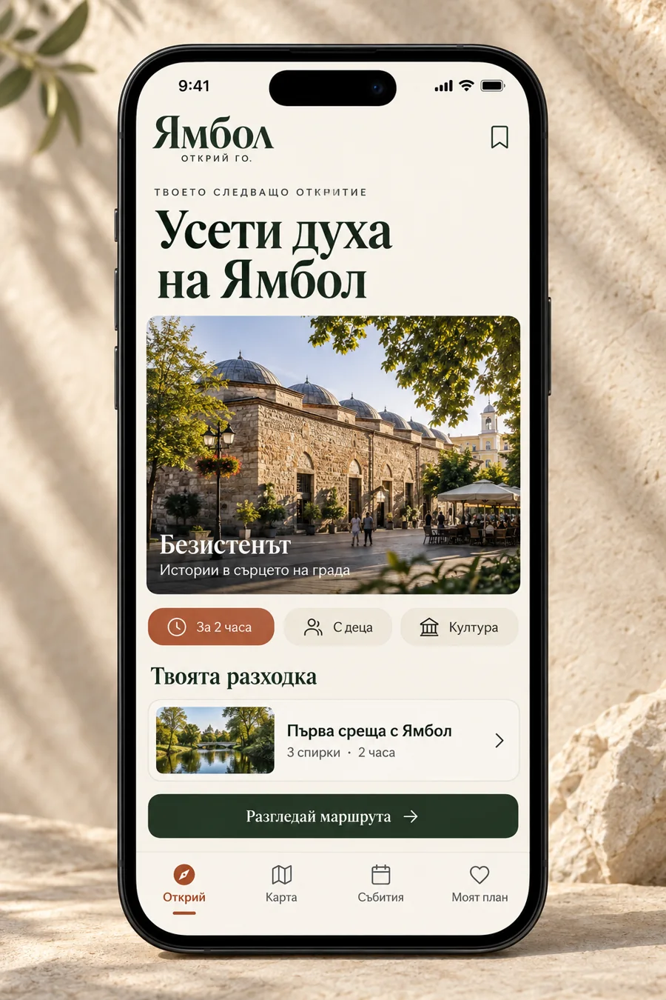

Туристическо приложение за Ямбол
Ямбол.
Открий го.
Историите на града.
В ръката на всеки посетител.
Забележителности и готови разходки,
полезни и за хората, които живеят тук.

Обектите са художествена интерпретация.
Международен пример · ivie, Виена
Градски гид
с реална аудитория
изтегляния
към май 2026 г.активни потребители годишно
според отчета за 2025 г.тематични разходки и гидове
през 2025 г.ivie съчетава местни истории с лесен избор
на маршрут и практична информация.
Източник: WienTourismus, годишен отчет 2025 ↗
Данните показват използване на ivie. Те не са прогноза за аудиторията или приходите на Ямбол.
Приложимият принцип
Моделът на Виена,
историите на Ямбол
| В ivie | Нашето предложение |
|---|---|
| Тематични разходки | „Първа среща с Ямбол“Готов маршрут според наличното време |
| Местни истории | Безистенът, Кабиле, КукерландияСобственото лице на града |
| Помощ на място | Карта, събития и личен планЯсна следваща стъпка за посетителя |
Целта е повече хора да откриват и посещават местата в Ямбол.
Практики: ivie ↗ · Местно съдържание: Официален туристически портал на Ямбол ↗
Първи етап · Туризъм
Един лесен начин
да преживееш града
20–30подбрани обекта
4проверени маршрута
2езика — български и английски
За посетителя
Отваря линк или QR код.
Избира разходка и намира пътя.
За жителите
Откриват събития и нови места.
Показват своя град на гости.
Редактор поддържа актуални часовете, маршрутите и събитията.
Предложен обхват за пилота. Обектите и маршрутите подлежат на проверка на място.
План за начало
Туристически пилот
за 14–16 седмици
Подготовка
Съдържание, партньори
и тест на прототипа
Разработка
Работеща първа версия
с подбрани маршрути
Пилот на място
Реални посетители,
обратна връзка и подобрения
Следващото решение
Общински партньор, отговорен редактор и бюджет за пилота.
След туристическия етап
Синя зона и местни данъци чрез интеграция с операторите.
Срокът е ориентировъчен при осигурен екип и съдържание. Измерваме използвани маршрути, потвърдени посещения и удовлетвореност. Платежните услуги изискват отделно договаряне.